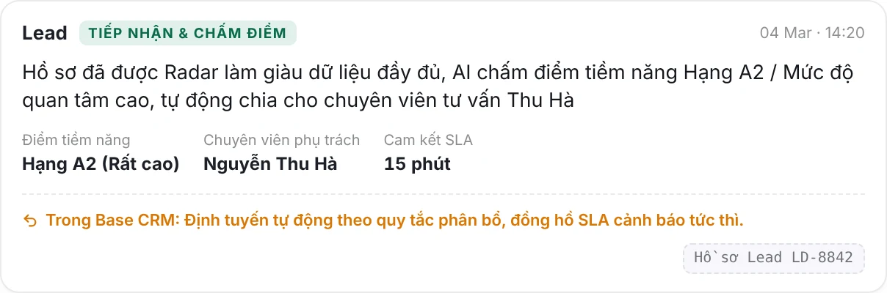
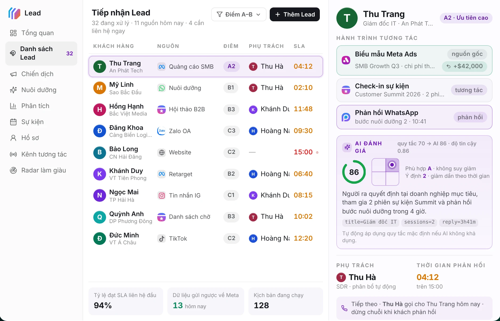
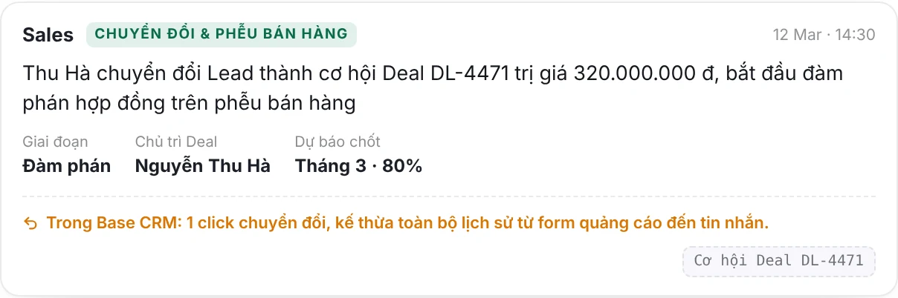

Solution design · Base CRM cho đội 10–15 Sales
Quản lý khách hàng và đội Sales trên một hành trình liền mạch
Từ lúc khách để lại thông tin đến lúc quản lý đọc được kết quả. Sáu chặng, mỗi chặng trả lời một câu hỏi quản lý, minh họa bằng giao diện Base CRM.
Chấm điểm và phân bổ

Một hồ sơ Lead

Chuyển thành cơ hội

Giao diện minh họa trên base.vn/platform/crm, dữ liệu mẫu của Base.
Bài toán
Khách hàng là tài sản lớn nhất, nhưng đang nằm rải rác.
Thông tin khách nằm trong Excel, Zalo và trí nhớ của từng người. Quản lý không nhìn thấy thì không quản lý được.
Hành trình khách hàng
Một hành trình. Sáu câu hỏi quản lý.
Đi theo đúng thứ tự một khách hàng đi qua doanh nghiệp. Chọn một chặng để xem cách tổ chức và thao tác trên hệ thống.
Tổng kết